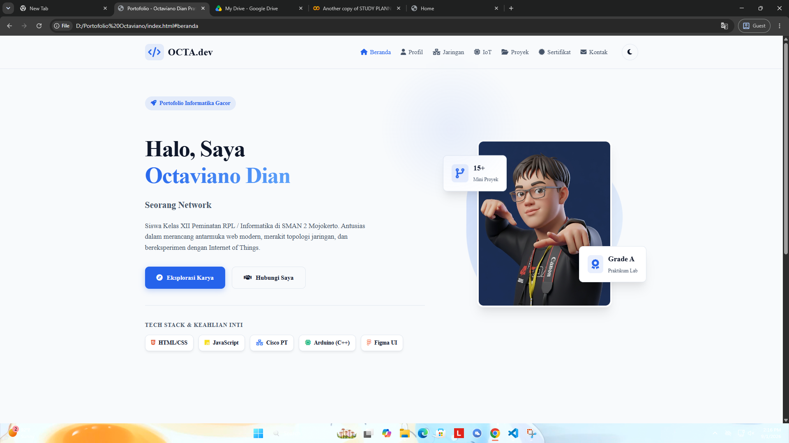

Halo, Saya
Octaviano Dian
Siswa Kelas XII Peminatan RPL / Informatika di SMAN 2 Mojokerto. Antusias dalam merancang antarmuka web modern, merakit topologi jaringan, dan bereksperimen dengan Internet of Things.
Tech Stack & Keahlian Inti
Tentang Saya
Mengenal lebih dekat profil, latar belakang, dan minat komprehensif saya di bidang teknologi.
Identitas Diri
Saya adalah individu yang adaptif dan selalu haus akan pengetahuan baru, terutama di bidang rekayasa perangkat lunak dan infrastruktur jaringan.
| Nama Lengkap | Octaviano Dian Pratama |
|---|---|
| TTL | Mojokerto, 15 Oktober 2008 |
| Asal Sekolah | SMAN 2 Mojokerto |
| Minat Karir | Fullstack Developer / Network Engineer |
Pendidikan
Kelas XII
Peminatan Informatika / RPL
Tahun Ajaran 2026/2027
Di Luar Coding
Aktivitas keseimbangan hidup.
Infrastruktur Jaringan
Pemahaman topologi, pengalamatan IP, dan simulasi konektivitas menggunakan Cisco Packet Tracer.
Simulasi Koneksi (ICMP)
InteraktifTekan tombol untuk uji Ping
Mini Subnet Calculator
Alat PraktikumUji cepat CIDR Prefix Network IPv4.
Internet of Things (IoT)
Integrasi hardware dan software, memprogram mikrokontroler Arduino untuk otomatisasi.
Smart Light Controller
Simulasi kontrol aktuator (Relay/Lampu) menggunakan mikrokontroler. Coba tekan *toggle* di bawah ini.
Status Ruangan: Gelap
> Menunggu perintah...
Lo-Fi Code Vibes
Generator melodi santai sintetis berbasis Web Audio API (Tanpa file eksternal).
int relayPin = 8;
bool lampState = false;
void setup() {
pinMode(relayPin, OUTPUT);
Serial.begin(9600);
}
void loop() {
if (receiveSignal() == HIGH) {
digitalWrite(relayPin, HIGH);
Serial.println("Lampu ON");
} else {
digitalWrite(relayPin, LOW);
}
}Galeri Karya
Beberapa proyek tugas sekolah dan eksperimen pribadi yang pernah saya kerjakan.

Website Portofolio Premium
Membangun antarmuka web interaktif menggunakan HTML, CSS modern, dan Vanilla JavaScript tanpa framework.
Prototipe UI E-Library
Merancang wireframe dan prototipe interaktif aplikasi perpustakaan sekolah SMAN 2 Mojokerto menggunakan Figma dengan fokus pada UX pelajar.
Smart Plant Watering
Sistem penyiram tanaman otomatis berbasis Arduino Uno dan Sensor Kelembaban Tanah.
Sertifikat & Prestasi
Bukti dedikasi dan pencapaian akademik di bidang teknologi informasi.
Introduction to Networks
Kelulusan modul dasar perutean dan pensakelaran jaringan komputer.
Juara 1 Lomba Web Design Antar Kelas
Penghargaan atas pembuatan landing page profil sekolah kreatif.
Mari Terhubung
Tertarik untuk berkolaborasi, berdiskusi soal teknologi, atau menyapa? Kirimkan pesan Anda!
Informasi Kontak
Jangan ragu untuk menghubungi saya melalui formulir di samping, atau melalui kontak langsung di bawah ini untuk respon yang lebih cepat.
Email Edukasi
siswa.octa@sman2mojokerto.sch.id
Lokasi Belajar
SMAN 2 Mojokerto
Jawa Timur, Indonesia